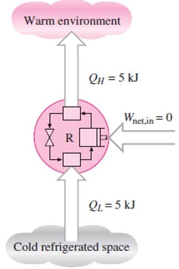

First Law of Thermodynamics: Energy Balance
Energy balance for any system undergoing any kind of process was expressed as:
or, in the rate form, as

For constant rates, the total quantities during a time interval ∆t are related to the quantities per unit time as
The energy balance can be expressed on a per unit mass basis as
For a closed system undergoing a cycle, the initial and final states are identical, and thus ∆Esystem = E2 - E1 = 0. Then the energy balance for a cycle simplifies to Ein -Eout = 0 or Ein Eout. Noting that a closed system does not involve any mass flow across its boundaries, the energy balance for a cycle can be expressed in terms of heat and work interactions as:
That is, the net work output during a cycle is equal to net heat input (Fig. 3.5).
. For a cycle ∆E =0, thus Q = W.
Specific heat is the energy required to raise the temperature of a unit mass of a substance by one degree in a specified way
Internal Energy (u),
It is the energy associated with molecules. Or it is the heat energy stored in a gas.
If a certain amount of heat is supplied to a gas, the result is that temperature of gas may increase
or volume of gas may increase thereby doing some external work or both temperature and
volume may increase, but it will be decided by the conditions under which the gas is heated. If
during heating of the gas the temperature increases its internal energy will also increase.
Internal energy is an extensive property, and it is generally expressed in KJ/Kg
Specific internal energy,u/m
We do not know how to find the absolute quantity of internal energy in any substance; however,
what is needed in engineering is the change of internal energy (ΔU).
Law of Conservation of Energy
Energy is neither created nor destroyed but only changes from one form to another, this is known
as the law of the conservation of energy.
The First Law of Thermodynamics can, therefore, be stated as follows
When a system undergoes a thermodynamic cycle, then the net heat supplied to the system from
the surroundings is equal to net work done by the system on its surroundings.
Or
For a closed system undergoing thermodynamic cycle, the net heat transfer ∑Q is equal to net
work transfer ∑W.
Hence
∑Q=∑W →valid for thermodynamic cycles.
This is also expressed in the form
∮dQ=∮dW
Where ∮ → Represents the sum for a complete cycle.
The first law applies to reversible as well as irreversible transformations, for non-cyclic process,
a more general formulation of first law of thermodynamics is required. A new concept which
involves a term called internal energy fulfills this need.
The First Law of Thermodynamics may also be stated as follows:
Heat and work are mutually convertible but since energy can neither be created nor destroyed,
the total energy associated with an energy conversion remains constant.\
No machine can produce energy without corresponding expenditure of energy, i.e., it is
impossible to construct a perpetual motion machine of first kind
dQ = dE + dW
This is the first law of thermodynamics for a closed system undergoing Reversible or
irreversible process
Because W=PdV → is valid for reversible process
Specific Heat at Constant Volume
The specific heat of a substance at Constant volume is defined as the rate of change of
specific internal energy with respect to temperature when the volume is held constant.

Enthalpy
One of the fundamental quantities which occur invariably in thermodynamics is the sum of
internal energy (u) and pressure volume product (pv). This sum is called Enthalpy (h).
The enthalpy of a substance, h, is defined as
h = u + pv
→It is an intensive property of a system (KJ/kg).
The enthalpy of a fluid is the property of the fluid, since it consists of the sum of a property and
the product of the two properties. Since enthalpy is a property like internal energy, pressure,
specific volume and temperature, it can be introduced into any problem whether the process is a
flow or a non-flow process.
The total enthalpy of mass, m, of a fluid can be,
H = U + pV, where H = mh.
For a perfect gas,
h = u + pv
Heat transferred at constant pressure increases the enthalpy of a system
Total Enthalpy H= mh
h = H/m(J/Kg)
Therefore Enthalpy is defined as the measure of the heat content of a substance.
Specific Heat at Constant Pressure
The specific heat at constant pressure is defined as the rate of change of enthalpy with respect
to temperature when the pressure is held constant.

Since h, T and p are properties, then,cp → is a property of the system
cp,cv → should not be defined in terms of heat transfer of constant pressure

Energy of an Isolated System
An isolated system is one in which there is no interaction of the system with the surroundings.
For an isolated system,
dQ = 0 & dW = 0
The first law gives
dE = 0
E = constant
Therefore, the energy of an isolated system is always constant.
Perpetual Motion Machine of the First Kind-PMM1
The first law states the general principle of the law of conservation of energy, which states;
Energy is neither created nor destroyed but only gets transformed from one form to another.
There can be no machine which would continuously supply mechanical work without some other
form of energy disappearing simultaneously.
Such a fictitious machine is called a Perpetual Motion Machine of the First Kind (PMMI).

The opposite of the above statement is also true. There can be no machine which would
continuously consume work without some other form of energy appearing simultaneously.

Limitations of the first law of thermodynamics
- The first law deals with the amounts of energy of various forms transferred between the
system and its surroundings and with changes in the energy stored in the system.
- It treats work and heat interactions as equivalent forms of energy in transit and does not
indicate the possibility of a spontaneous process proceeding in a certain direction.
APPLICATION OF FIRST LAW OF THERMODYNAMICS TO NON-FLOW OR
CLOSED SYSTEM
1. Reversible Constant Volume (or Isochoric) Process (v = constant)

In a constant volume process the working substance is contained in a rigid vessel, hence the
boundaries of the system are immovable and no work can be done on or by the system. It will be
assumed that constant volume implies zero work unless stated otherwise.
Considering mass of the working substance unity and applying first law of thermodynamics to
the process.

2. Reversible Constant Pressure (or Isobaric) Process (p = constant).

When the boundary of the system is inflexible as in a constant volume process, then the pressure
rises when heat is supplied. Hence for a constant pressure process, the boundary must move
against an external resistance as heat is supplied.
Hence for a constant pressure process, the boundary must move against an external resistance as
heat is supplied. Here, a cylinder behind a piston can be made to undergo a constant pressure
process. Since the piston is pushed through a certain distance by the force exerted by the gas,
then the work is done by the gas on its surroundings
Considering unit mass of working substance and applying first law of thermodynamics to the
process;

3. Reversible Temperature (or Isothermal) Process (pv = constant, T = constant)
A process at a constant temperature is called an isothermal process. When a working substance
in a cylinder behind a piston expands from a high pressure to a low pressure there is a tendency
for the temperature to fall. In an isothermal expansion heat must be added continuously in order
to keep the temperature at the initial value. Similarly in an isothermal compression heat must be
removed from the working substance continuously during the process.

Considering unit mass of working substance and applying first law to the process

4. Reversible Adiabatic Process ( pvγ = constant)
An adiabatic process is one in which no heat is transferred to or from the fluid during the
process. Such a process can be reversible or irreversible. The reversible adiabatic non-flow
process will be considered in this section.
Considering unit mass of working substance and applying first law to the process.

The above is true for an adiabatic process whether the process is reversible or not.
For an adiabatic process to take place, perfect thermal insulation for the system must be
available.

5. Polytropic Reversible Process (pvn = constant)
It is found that many processes in practice approximate to a reversible law of form pvn = constant, where n is a constant. Both vapours and perfect gases obey this type of law closely in
many non-flow processes. Such processes are internally reversible.
6. Free Expansion

Consider two vessels 1 and 2 interconnected by a short pipe with a valve A, and perfectly
thermally insulated. Initially let the vessel 1 be filled with a fluid at a certain pressure, and let 2
be completely evacuated. When the valve A is opened the fluid in 1 will expand rapidly to fill
both vessels 1 and 2. The pressure finally will be lower than the initial pressure in vessel 1.
This is known as free or un-resisted expansion. The process is highly irreversible; since the fluid
is eddying continuously during the process. Now applying first law of thermodynamics (or non�flow energy equation) between the initial and final states.

In this process, no work is done on or by the fluid, since the boundary of the system does not
move. No heat flows to or from the fluid since the system is well lagged. The process is
therefore, adiabatic but irreversible.
u2-u1=0
u2-u1=0
Since u2=u1
In a free expansion, therefore, the internal energy initially equals the initial energy finally.
For a perfect gas,
U= CvT
∴ For a free expansion of a perfect gas, CvT1= CvT2
where→T1=T2
That is, for a perfect gas undergoing a free expansion, the initial temperature is equal to the final
temperature.
Second Law of Thermodynamics (Directional law)
The first law cannot indicate whether a metallic bar of uniform temperature can spontaneously
become warmer at one end and cooler at the other. All that the law can state is that if this process
did occur, the energy gained by one end would be exactly equal to that lost by the other. First
law of thermodynamics simply says that energy is conserved. It does not give any direction for
particular process. It is the second law of thermodynamics, which gives direction for a particular
process through the concept of entropy, and hence second law is known as Directional law.
Further, the first law of thermodynamics establishes equivalence between the quantity of heat
used and the mechanical work but does not specify the conditions under which conversion of
heat into work is possible, neither the direction in which heat transfer can take place. This gap
has been bridged by the second law of thermodynamics.
Work is known as high-grade energy.
Heat is known as low-grade energy.
It is found that for a cycle, complete conversion of low-grade energy (heat) into high-grade
energy (work) is impossible.
Thermal Energy Reservoir (TER)
A thermal energy reservoir (TER) is defined as a large body of infinite heat capacity, which is
capable of absorbing or rejecting an unlimited quantity of heat without suffering appreciable
changes in its thermodynamic coordinates.
Source is a reservoir that supplies thermal energy without undergoing any temperature change.
Sink is s reservoir, which absorbs thermal energy without undergoing any temperature change.
Mechanical Energy Reservoir (MER)
A mechanical energy reservoir (MER) is a large body enclosed by an adiabatic impermeable wall
capable of storing work as potential energy or kinetic energy.
Cyclic Heat Engine
A heat engine cycle is a thermodynamic cycle in which there is a net heat transfer to the system
and a net work transfer from the system. The system that executes a heat engine cycle is called a
heat engine.
A heat engine may be in the form of a mass of gas confined in a cylinder and piston machine, or
a mass of water moving in a steady flow through a steam power plant.

(a) Heat engine cycle performed by a closed system undergoing four successive
energy interactions with the surrounding.
In the cyclic beat engine, as represented above, heat is transferred to the system, work, : is
done by the system, work Wc is done upon the system, and then heat is rejected from the
system. The system is brought back to the initial state through all these four successive
processes, which constitute a heat engine cycle.

(b) Heat engine cycle performed by a steady flow system interacting with the
surrounding as shown above (b)
Heat is transferred from the furnace to the water in the boiler to form steam which then
works on the turbine rotor to produce work , then the steam is condensed to water in the
condenser in which an amount is rejected from the system, and finally work is done on the
system (water) to pump it to the boiler. The system repeats the cycle.
Refrigerator
A refrigerator is a device which, operating in a cycle, maintains a body at a temperature lower
than the temperature of the surroundings

Let the body A be maintained at temperature, which is lower than the ambient temperature t1 •
Even though A is insulated, there will always be heat leakage Q2 into the body from the
surroundings by virtue of the temperature difference. In order to maintain, body A at the constant
temperature,t2 heat has to be removed from the body at the same rate at which heat is leaking
into the body. This heat (Q2 ) is absorbed by a working fluid, called the refrigerant, Which
evaporates in the evaporator,E1 at a temperature lower than t2 absorbing the latent heat of
vaporization from the body A which is cooled or refrigerated (Process 4-1).
The vapour is first compressed in the compressor c1 driven by a motor, which absorbs work Wc
(Process l-2), and is then condensed in the condenser C, rejecting the latent heat of condensation
at a temperature higher than that of the atmosphere ( at t1 ) for heat transfer to take place
(Process 2-3). The condensate then expands adiabatically through an expander (an engine or
turbine) producing work Wc
, when the temperature drops to a value lower than t2 such that heat Q2
flows from the body A to make the refrigerant evaporate (Process 3-4). Such a cyclic device
of flow through E1-c1-c2-E2 is called a refrigerator.
In a refrigerator cycle, attention is concentrated on the body A.Q2 and Ware of primary interest.
Performance of Heat Engines and Reversed Heat Engines

Refer Fig (a). A heat engine is used to produce the maximum work transfer from a given positive
heat transfer. The measure of success is called the thermal efficiency of the engine and is
defined by the ratio:

Where, W = Net work transfer from the engine, and
Q1 = Heat transfer to engine.
For a reversed heat engine (b) acting as a refrigerator when the purpose is to achieve the
maximum heat transfer from the cold reservoir, the measure of success is called the co-efficient
of performance (C.O.P.). It is defined by the ratio:

Where, = Heat transfer from cold reservoir, and
W = the net work transfer to the refrigerator.
For a reversed heat engine (b) Acting as a heat pump, the measure of success is again called the
co-efficient of performance. It is defined by the ratio:

Where, = Heat transfer to hot reservoir, and
W = Net work transfer to the heat pump.
In all the above three cases application of the first law gives the relation Q1–Q2 = W, and this
can be used to rewrite the expressions for thermal efficiency and co-efficient of performance
solely in terms of the heat transfers.

Note;
It may be seen that is always less than unity and (C.O.P.) heat pump is always greater than
unity.
STATEMENTS OF SECOND LAW OF THERMODYNAMICS
The second law of thermodynamics has been enunciated meticulously by Clausius, Kelvin and
Planck in slightly different words although both statements are identical. Each statement is based
on an irreversible process. The first considers transformation of heat between two thermal
reservoirs while the second considers the transformation of heat into work.
Kelvin–Planck Statement
A heat engine must reject some heat to a low-temperature reservoir in order to complete the cycle. That is, no heat engine can convert all the heat it receives to useful work. This limitation on the thermal efficiency of heat engines forms the basis for the Kelvin–Planck statement of the second law of thermodynamics, which is expressed as follows:
It is impossible for any device that operates on a cycle to receive heat from a single reservoir and produce a net amount of work.
That is, a heat engine must exchange heat with a low-temperature sink as well as a high-temperature source to keep operating. The Kelvin–Planck statement can also be expressed as no heat engine can have a thermal efficiency of 100 percent (Fig. 4.7), or as for a power plant to operate, the working fluid must exchange heat with the environment as well as the furnace.
A heat engine that violates the Kelvin–Planck statement of the second law
Clausius Statement
There are two classical statements of the second law—the Kelvin–Planck statement, which is related to heat engines and discussed in the preceding section, and the Clausius statement, which is related to refrigerators or heat pumps. The Clausius statement is expressed as follows:
It is impossible to construct a device that operates in a cycle and produces no effect other than the transfer of heat from a lower-temperature body to a higher-temperature body.
It is common knowledge that heat does not, of its own volition, transfer from a cold medium to a warmer one. The Clausius statement does not imply that a cyclic device that transfers heat from a cold medium to a warmer one is impossible to construct. In fact, this is precisely what a common household refrigerator does.

A refrigerator that violates the Clausius statement of the second law.
Equivalence of the Two Statements
The Kelvin–Planck and the Clausius statements are equivalent in their consequences, and either statement can be used as the expression of the second law of thermodynamics. Any device that violates the Kelvin–Planck statement also violates the Clausius statement, and vice versa. This can be demonstrated as follows.
Consider the heat-engine-refrigerator combination shown in Fig. 4.9a, operating between the same two reservoirs. The heat engine is assumed to have, in violation of the Kelvin–Planck statement, a thermal efficiency of 100 percent, and therefore it converts all the heat QH it receives to work W. This work is now supplied to a refrigerator that removes heat in the amount of QL from the low-temperature reservoir and rejects heat in the amount of QL + QH to the high-temperature reservoir.
Proof that the violation of the Kelvin–Planck statement leads to the violation of the Clausius statement
During this process, the high temperature reservoir receives a net amount of heat QL (the difference between QL QH and QH).
Thus, the combination of these two devices can be viewed as a refrigerator, as shown in Fig. 4.9b, that transfers heat in an amount of QL from a cooler body to a warmer one without requiring any input from outside. This is clearly a violation of the Clausius statement.
Therefore, a violation of the Kelvin–Planck statement results in the violation of the Clausius statement. It can also be shown in a similar manner that a violation of the Clausius statement leads to the violation of the Kelvin–Planck statement.
Therefore, the Clausius and the Kelvin–Planck statements are two equivalent expressions of the second law of thermodynamics.
Reversible and Irreversible Processes
A reversible process is defined as a process that can be reversed without leaving any trace on the surroundings. That is, both the system and the surroundings are returned to their initial states at the end of the reverse process. This is possible only if the net heat and net work exchange between the system and the surroundings is zero for the combined (original and reverse) process. Processes that are not reversible are called irreversible processes.
It should be pointed out that a system can be restored to its initial state following a process, regardless of whether the process is reversible or irreversible. But for reversible processes, this restoration is made without leaving any net change on the surroundings, whereas for irreversible processes, the surroundings usually do some work on the system and therefore does not return to their original state
Causes of Irreversibility
Broken eggs, spilt milk, burnt boats, the wasted years of indolence that the locusts have eaten are
merely proverbial metaphors for irreversibility.
The irreversibility of a process may be due to either one or both of the following:
(a) Lack of equilibrium during the process.
(b) Involvement of dissipative effects
Lack of equilibrium during the process
The lack of equilibrium (mechanical, thermal or chemical) between the system and its
surroundings, or between two systems, or two parts of the same system, causes a spontaneous
change, which is irreversible. The following are specific examples in this regard:
1. Heat Transfer through a Finite Temperature Difference
2. Lack of Pressure Equilibrium within the Interior of the System or between the
System and the Surrounding.
3. Free Expansion
Irreversibility due to Dissipative Effects
The irreversibility of a process may be due to the dissipative effects in which work is done
without producing an equivalent increase in the kinetic or potential energy of any system. The
transformation of work into molecular internal energy either of the system or of the reservoir
takes place through the agency of such phenomena as friction, viscosity, elasticity, electrical
resistance, and magnetic hysteresis. These effects are known as dissipative effects, and work is
said to be dissipated.
Dissipation of energy means the transition of ordered macroscopic motion into chaotic molecular
motion, the reverse of which is not possible without violating second law.
A reversible process should fulfill the following conditions:
1. The process should not involve friction of any kind.
2. Heat transfer should not take place with finite temperature difference.
3. The energy transfer as heat and work during the forward process should be identically
equal to energy transfer as heat and work during the reversal of the process.
4. There should be no free or unrestricted expansion.
5. Should be no mixing of the fluids.
6. The process must proceed in a series of equilibrium states
Some examples of ideal reversible processes are:
1. Frictionless adiabatic expansion or compression;
2. Frictionless isothermal expansion or compression;
Some examples of irreversible processes are:
1. Combustion process;
2. Mixing of two fluids;
3. All processes involving friction;
4. Flow of electric current through a resistance;
5. Heat flow from a higher temperature to lower temperature
3. Condensation and boiling of liquids
Reversible processes are preferred because the devices, which produce work such as engines
and turbines, reversible process of the working fluid delivers more work than the corresponding
irreversible processes. Also in case of fans, compressors, refrigerators and pumps, less power
input is required when reversible processes are used in place of corresponding irreversible ones.
In thermodynamic analysis concept of reversibility, though hypothetical, is very important
because a reversible process is the most efficient process. Only reversible processes can be truly
represented on property diagrams. Thermodynamic reversibility can only be approached but can
never be achieved. Thus, the main task of the engineer is to design the system that will evolve
approximate reversible processes.
Examples
A domestic food freezer maintains a temperature of -15°C. The ambient air temperature is 30°C.
If heat leaks into the freezer at the continuous rate of 1.75 .kJ/s, what is the least power necessary
to pump this heat out continuously?
Solution
Freezer temperature, = -15 + 273 =258 K
Ambient air temperature, = 30 + 273 = 303 K
The refrigerator cycle removes heat from the freezer at the same rate at which heat leaks into it

A reversible heat engine operates between two .reservoirs at temperatures of 600°C and 40°C.
The engine drives a reversible refrigerator, which operates, between reservoirs at temperatures of
40°C and - 20°C. The heat transfer to the heat engine is 2000 kJ and the net work output of the
combined engine refrigerator plant is 360 kJ.
(a) Evaluate the heat transfer to the refrigerator and the net heat transfer to the reservoir at
40°C.
(b) Reconsider (a) given that the efficien.cy of the heat engine and the COP of the
refrigerator are each 40% of their maximum possible values.
Solution


The Carnot cycle
Heat engines are cyclic devices and that the working fluid of a heat engine returns to its initial state at the end of each cycle. Work is done by the working fluid during one part of the cycle and on the working fluid during another part. The difference between these two is the net work delivered by the heat engine.
The net work, thus the cycle efficiency, can be maximized by using processes that require the least amount of work and deliver the most, that is, by using reversible processes.
the best known reversible cycle is the Carnot cycle. The theoretical heat engine that operates on the Carnot cycle is called the Carnot heat engine. The Carnot cycle is composed of four reversible processes—two isothermal and two adiabatic—and it can be executed either in a closed or a steady-flow system.
The four reversible processes that make up the Carnot cycle are as follows:
Reversible Isothermal Expansion (process 1-2, TH constant). Initially (state 1), the temperature of the gas is TH and the cylinder head is in close contact with a source at temperature TH.
Reversible Adiabatic Expansion (process 2-3, temperature drops from TH to TL). At state 2, the reservoir that was in contact with the cylinder head is removed and replaced by insulation so that the system becomes adiabatic.
Reversible Isothermal Compression (process 3-4, TL constant).
Reversible Adiabatic Compression (process 4-1, temperature rises from TL to TH).
P-V diagram of the Carnot cycle.

The Carnot cycle cannot be performed in practice because of the following reasons:
1. It is impossible to perform a frictionless process.
2. It is impossible to transfer the heat without temperature potential.
3. Isothermal process can be achieved only if the piston moves very slowly to allow heat
transfer so that the temperature remains constant.
Adiabatic process can be achieved only
if the piston moves as fast as possible so that the heat transfer is negligible due to very
short time available. The isothermal and adiabatic processes take place during the same
stroke therefore the piston has to move very slowly for part of the stroke and it has to
move very fast during remaining stroke.
The Carnot Refrigerator and Heat Pump
A refrigerator or a heat pump that operates on the reversed Carnot cycle is called a Carnot refrigerator, or a Carnot heat pump. The coefficient of performance of any refrigerator or heat pump, reversible or irreversible, is given by
where QL is the amount of heat absorbed from the low-temperature medium and QH is the amount of heat rejected to the high-temperature medium.
Then the COP relations for reversible refrigerators and heat pumps become
and
Important points with respect to reversible cycles
- Efficiency of all reversible cycles is equal if they operate between same temperature
limits
- Efficiency of reversible cycle is independent of working fluid
- Efficiency of a reversible cycle depends only on
temperature limits.
Example
A domestic food refrigerator maintains a temperature of – 12°C.
The ambient air temperature is 35°C. If heat leaks into the freezer
at the continuous rate of 2 kJ/s determine the least power
necessary to pump this heat out continuously.
Solution
Freezer temperature, = -12 + 273 = 261 K
Ambient Air temperature, = 35 + 273 = 308 K
Rate of heat leakage into the freezer = 2 kJ/s

Least power required to pump the heat = Refrigerator cycle removes heat from the freezer at the
same rate at which heat leaks into it

Hence, least power required to pump the heat continuously is 0.36 KW
Example
A house requires 2 x 105kJ/h for heating in winter. Heat pump is used to absorb heat from cold
air outside in winter and send heat to the house. Work required to operate the heat pump is 3x104kJ/h. Determine:
(i) Heat abstracted from outside;
(ii) Co-efficient of performance
Solution
(i) Heat abstracted from outside=
Heat requirement of the house,Q1 (or heat rejected) = 2x105 KJ/h
Work required to operate the heat pump, w=3x104 KJ/h


ENTROPY
Entropy refers to the measure of disorder of a system.It is represented by the symbol, S

Where dS is the change in entropy given by dS=S1-S2


Entropy is a function of a quantity of heat, which shows the possibility of conversion of that
heat into work. The increase in entropy is small when heat is added at a high temperature and is
greater when heat addition is made at a lower temperature. Thus for maximum entropy, there is
minimum availability for conversion into work and for minimum entropy there is maximum
availability for conversion into work.
It may be noted that not all heat is equally valuable for converting into work. Heat that is
supplied to a substance at high temperature has a greater possibility of conversion into work than
heat supplied to a substance at a lower temperature
General Case for Change of Entropy of a Gas


Example
An iron cube at a temperature of 400°C is dropped into an insulated bath containing 10 kg water
at 25°C. The water finally reaches a temperature of 50°C at steady state. Given that the specific
heat of water is equal to 4186 J/kg K. Find the entropy changes for the iron cube and the water.
Is the process reversible? If so why?
solution
Given: Temperature of iron cube = 400°C = 673 K
Temperature of water = 25°C = 298 K
Mass of water = 10 kg
Temperature of water and cube after equilibrium = 50°C = 323 K
Specific heat of water, = 4186 J/kg K
Entropy changes for the iron cube and the water.
Is the process reversible?
Now, Heat lost by iron cube = Heat gained by water

Since ΔS > 0 hence, the process is irreversible
Example
An ideal gas is heated from temperature T1 to T2 by keeping its volume constant. The gas is
expanded back to its initial temperature according to the law pvn = constant. If the entropy
change in the two processes are equal, find the value of n in terms of the adiabatic index γ.
solution

Example
0.04 kg of carbon dioxide (molecular weight = 44) is compressed from 1bar, 20°C, until the
pressure is 9 bar, and the volume is then 0.003 m3. Calculate the change of entropy. Take for
carbon dioxide as 0.88 kJ/kg K, and assume carbon dioxide to be a perfect gas.
Solution
Mass of carbon dioxide, m = 0.04 kg
Molecular weight, M = 44
Initial pressure,p1 = 1 bar = 1 × 105 N/m2
Initial temperature,T1 = 20 + 273 = 293 K
Final pressure,p2 = 9 bar
Final volume,v2 = 0.003 m3
cp for carbon dioxide = 0.88 kJ/kg K


Further examples
A cold storage is to be maintained at -5°C while the surroundings are at 35°C. The heat leakage
from the surroundings into the cold storage is estimated to be 29 kW. The actual COP of the
refrigeration plant used is one-third that of an ideal plant working between the same
temperatures. Find the power required (in kW) to drive the plant.
solution


Example
Determine the ideal COP of an absorption refrigerating system in which the heating, cooling, and
refrigeration take place at 197°C, 17°C, and –3°C respectively.
Solution

Therefore;

email me